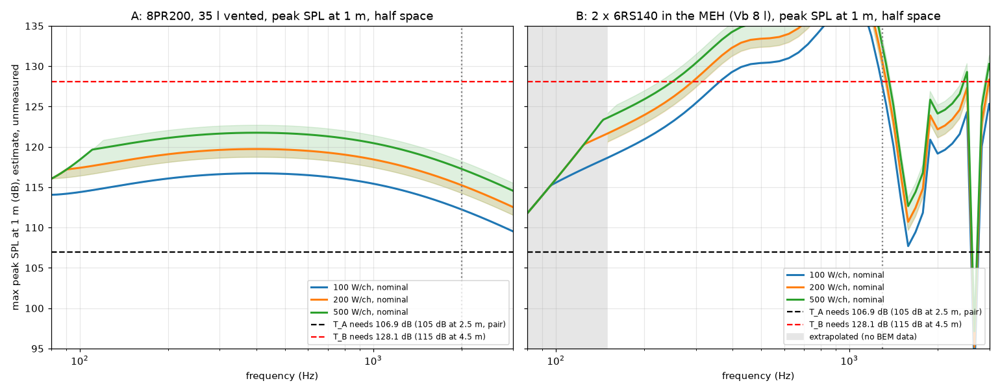
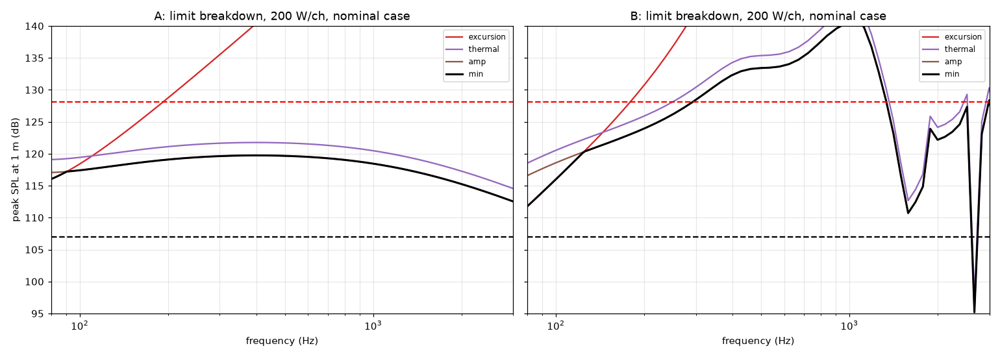
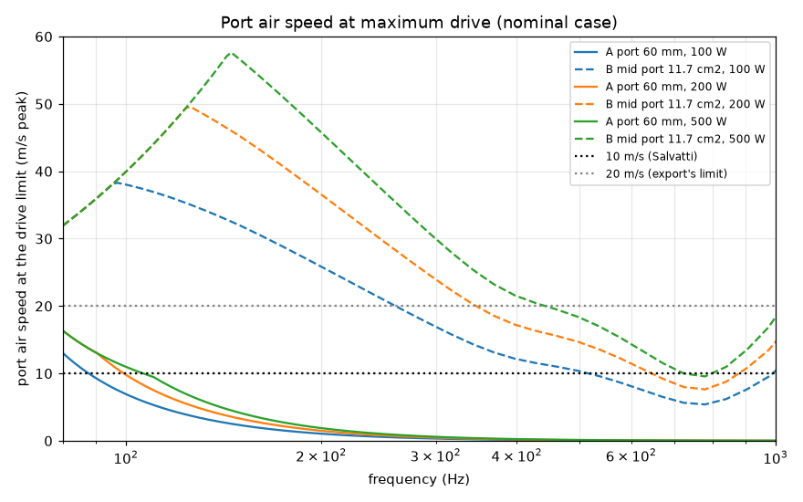
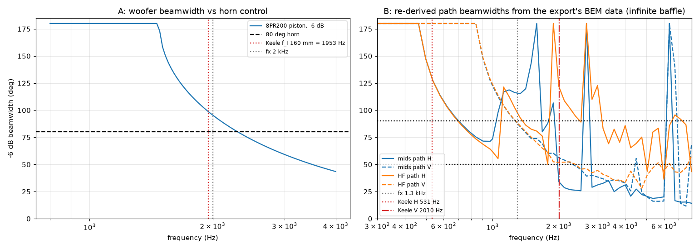

A stereo pair of home speakers with a club feel: an 8" woofer in a vented box and a 1" compression driver on a new 3D-printed slot horn, crossed at about 2 kHz, with a sub added later.
What it is. Tek's brief: "the ultimate home DJ speaker, so if you a pro dj in a club and want something at home that gives club vibes." The target is about 105 dB peaks at the listening spot, 2–3 m away, from a stereo pair running down to about 80 Hz, where a sub will take over. The project builds on slot-horn designs by the co-designer; the new horn is Tek's lab design in that style.
Where it stands. Two routes were compared on equal terms. Option A (chosen, 16 Nov): Faital Pro 8PR200 woofer in about 35 L vented, plus a B&C DH450 on a new printed slot horn about 160 mm wide, crossed at about 2 kHz. Option B, a multiple-entry horn (one DH450 and two 6.5" Faital 6RS140 mids per side), is parked. Option A has more level at 80 Hz, much slower port air and a better directivity match at the crossover (all estimates). The horn for option A has not been designed or simulated yet.
What's next. First design pass on the option A horn: checks first, then simulation, CAD and a print-check of the file. The project is classed critical: it will be measured.
| Use | Home DJ speaker with a club feel; stereo pair; active (DSP and amplifier) |
|---|---|
| Level | About 105 dB peaks at the listening spot, 2–3 m (Tek, 15 Nov; confirmed 16 Nov over an earlier 115 dB club-level figure). Open: whether this is per pair or per speaker (6 dB difference) |
| Bandwidth | Tops to about 80 Hz; sub crossover about 80 Hz (Tek, 16 Nov); the sub is a possible later project |
| Coverage | 80° horizontal, controlled down to about 2 kHz; vertical not set |
| Woofer | Faital Pro 8PR200 (8 Ω), one per side; fallback B&C 8NDL51 |
| HF driver | B&C DH450, 1" compression driver, one per side |
| Crossover | About 2 kHz, active, so woofer and horn directivity meet near 80°; DH450 maker recommends ≥ 1 kHz at ≥ 12 dB/octave [B&C, DH450 data sheet, w4] |
| Size | Bookshelf or stand box, about 30–40 L (35 L modelled) |
| Manufacture | Box: simple flat-panel woodwork. Horn and port: 3D print |
| Weight | not set |
| How it will be measured | Critical class: measured with one mic and REW. Measurement plan not yet written |
| 15 Nov 2026 | New full speaker (horn, woofer, new cabinet), classed critical. Stereo pair, active, sub added later, about 105 dB peaks at 2–3 m. |
|---|---|
| 15 Nov 2026 | New, larger 1" slot horn in the style of the co-designer's reference horn. Why: a horn that holds 80° down to the crossover is needed to meet an 8" woofer. A multi-entry waveguide is parked for a version 2. |
| 15 Nov 2026 | Woofer: Faital Pro 8PR200 pair, after 7 drivers were modelled in 35 L; fallback B&C 8NDL51. |
| 15 Nov 2026 | Crossover about 2 kHz, horn mouth about 160 mm wide. Why: every 8" modelled is 141–163° wide at 1.5 kHz and narrows to 80° only at about 2.2–2.3 kHz, so 2 kHz matches the 80° horn better than 1.5 kHz, and the mouth can be smaller derived. |
| 16 Nov 2026 | A multiple-entry horn design from an earlier chat brought in as option B, unverified here, to be compared with option A. |
| 16 Nov 2026 | Sub crossover about 80 Hz. Amplifier power per channel unknown; working figure 200 W. |
| 16 Nov 2026 | Level target 105 dB peaks at 2–3 m stands. Option A chosen; option B parked. Why: +9.1 dB margin at 80 Hz against B's +4.8 dB, port air at 6 m/s against 14–18 m/s, and a better directivity match at the crossover estimate (unmeasured). |
Seven 8" drivers modelled from data sheets in 35 L, sealed and vented. Model tests: 3/3 exact-solution tests pass verified: model tests.
Assumptions: half space (no room, no boundary gain), 200 W per channel unless stated, peak levels at 1 m; lumped vented-box model for A (1–2 dB below the data-sheet sensitivity, so conservative); option B from its own stored BEM data (infinite baffle, single solver, not re-run here), extrapolated below 150 Hz. 11 model tests pass (9 exact hand cases, 2 consistency checks) verified: model tests. In a free field, subtract up to 6 dB at the low end from both.
| A: 8PR200 35 L vented + DH450 slot horn | B: multiple-entry horn (parked) | |
| Max peak SPL at 1 m, 80 / 100 / 150 Hz | 116.1 / 117.4 / 118.4 dB | 111.8 / 116.0 (extrapolated) / 121.7 dB |
| Margin over the 105 dB at 2.5 m target, from 80 Hz (100 / 200 / 500 W) | +7.1 / +9.1 / +9.1 dB | +4.8 / +4.8 / +4.8 dB |
| Same if 105 dB is per speaker (200 W) | +3.1 dB | −1.2 dB |
| Port air speed at the target level, 80 / 100 Hz | 5.7 / 2.9 m/s | 18.3 / 14.1 m/s |
| Limited by | excursion below about 95 Hz, amplifier above | mid excursion below about 120 Hz, whatever the amplifier or rear volume |
| Directivity at the crossover | woofer 96° at 2 kHz against the 80° horn: a step of about 16° | 110–122° horizontal at 1.2–3 kHz against its 90° target |
| HF headroom above the crossover | +16 dB over the target | +13 dB after its EQ |
Neither option reaches the earlier club-level figure (115 dB peaks per speaker at 4.5 m from 150 Hz): A is about −10 dB, B −6 dB by drive and −13.5 dB by port air speed. Reaching it would need a new low-frequency section.




Not yet designed. By Keele's rule, a mouth about 156–160 mm wide holds 80° horizontally from about 1.95–2 kHz derived [Keele, "What's so sacred about exponential horns?", w4]. Vertical coverage, profile, on-axis response and mounting are open. Design rules carried over from the lab's earlier 1" horn: model the driver fixings from the drawing; keep overhangs to 42°, not 45°, and check them on the exported file.
Its v0.2 export is unreleased and unreviewed and must not be printed: the release gate passes 37 of 40 checks (two unsupported-layer failures, two fixings with too little nut room); no second solver, slicer check or independent review. Its horn work may feed a later review for the co-designer.
Nothing sliced yet; no print log entries.
| Slot horn (×2) | Flared port (×2) | |
| Printer | not set | not set |
| Material / brand | not set | not set |
| Nozzle; layer height | not set | not set |
| Walls; top / bottom | not set | not set |
| Infill % and pattern | not set | not set |
| Supports | not set | not set |
| Orientation | not set | not set |
| Splits and joints | not set | not set |
| Temperatures | not set | not set |
| Speed / profile | not set | not set |
| Brim | not set | not set |
| Slicer and profile version | not set | not set |
| Estimated time | not set | not set |
| Estimated mass | 0.8–1.2 kg each assumption | not set |
Sources: Faital Pro, 8PR200 data sheet (weight 4); B&C, DH450 data sheet (weight 4); Keele, "What's so sacred about exponential horns?" (weight 4); Salvatti, Devantier and Button, port air-flow study (weight 4). The co-designer's own horn designs are not shown.